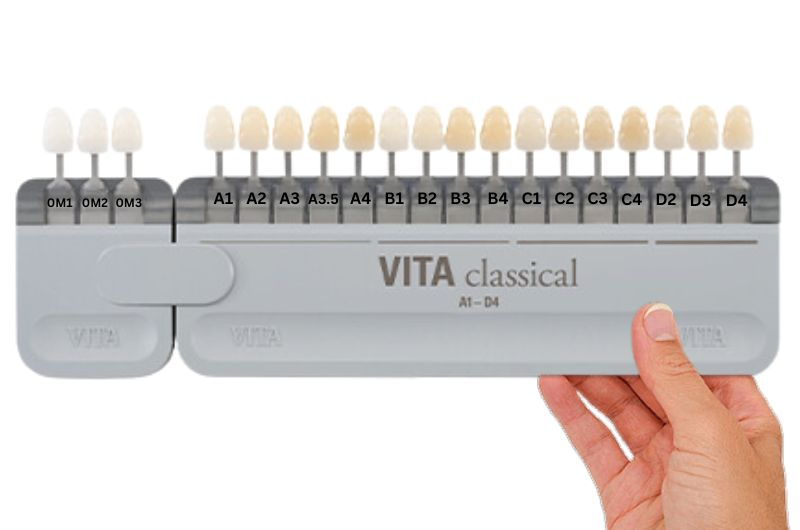

- Od poniedziałku do piątku od godziny 9:00 do 19:00

Wybór odpowiedniego odcienia zębów jest jak wybór koloru farby do domu; to właśnie sprawia, że człowiek czuje się komfortowo. Znajomość odcieni zębów pomoże Ci uzyskać uśmiech, o jakim zawsze marzyłeś. Od tych, które są nieco białawe i prawie podobne do koloru zębów, po te, które są białe i wydatne, istnieje idealne dopasowanie odcieni zębów. Teraz przejdziemy do różnych odcieni zębów, aby uzyskać najlepszy efekt i lśniący uśmiech.
Jak dobrać odcień zębów? Najważniejsze czynniki
Wybór odpowiedniego odcienia zębów to raczej gra, a w jego doborze pomaga kilka czynników. Jaki jest najlepszy odcień zębów? Podajemy informację.
Odcień skóry
Jest to bardzo ważny czynnik przy wyborze odpowiedniego odcienia zębów. Jaśniejsza karnacja wymaga delikatniejszej i pastelowej bieli, natomiast cieplejszy odcień skóry pasuje do bardziej nasyconej bieli.
Naturalny kolor zębów
Zwróć uwagę na kolor zębów, które aktualnie posiadasz. Jeśli leczeniu podlega kilka zębów, wówczas należy wybrać kolor, który będzie uzupełniał resztę Twoich zębów.
Warunki oświetleniowe
Oczywiście odcień zęba zależy od światła, w jakim jest oglądany. Upewnij się, że cień wygląda dobrze zarówno w sztucznym, jak i normalnym oświetleniu, aby zrozumieć, jak dobrze wygląda.
Wiek
Normalne starzenie się organizmu człowieka powoduje, że zęby ciemnieją. Jeden pacjent może być młodszy będzie preferował jasny kolor, podczas gdy inny pacjent może potrzebować naturalnie wyglądającego koloru, kojarzonego z osobami starszymi.
Osobiste preferencje
Jak efektowny i subtelny powinien być Twój uśmiech? Wszystko sprowadza się do osobistych preferencji stylu i tego, jak chciałbyś, aby Twoje zęby przedstawiały ten styl.
Materiał dentystyczny
Rodzaj użytego materiału (np. porcelana, tlenek cyrkonu) ma wpływ na ostateczny odcień materiału. W zależności od materiału światło odbija się inaczej, należy to wziąć pod uwagę.
Preferencje kulturowe i społeczne
Niektórzy ludzie lubią, gdy ich zęby są bardzo białe i błyszczące, podczas gdy inni, zwłaszcza w niektórych częściach świata, wolą, aby ich zęby były w naturalnym kolorze. Używaj tego, co wydaje się właściwe w środowisku społecznym, w którym się znajdujesz.
Zrozumienie kategorii odcieni zębów

Chcąc uzyskać idealny uśmiech, trzeba znać kilka podstawowych niuansów dotyczących klasyfikacji odcieni zębów. Kolor zębów jest jednym z najważniejszych elementów projektu uśmiechu, a wybór odpowiedniego koloru zębów będzie miał ogromny wpływ na naturalność i atrakcyjność uśmiechu. Obecnie najpowszechniej stosowanym systemem klasyfikacji koloru zęba jest skala VITA – jest to system uniwersalny, który może pomóc zarówno pacjentowi, jak i lekarzowi stomatologowi w doborze odpowiedniego koloru uzupełnienia.
Kategorie odcienia zęba: Skala VITA jako tabela odcieni zęba
The VITA scale as tooth shade guide organizes tooth shades into four primary categories: A, B, C, and D are the different categories of shades that are available for matching with a patient's natural tooth color since the different categories consist of different hues and saturation.
A (Reddish-Brown): Shades in this category include those which are reddish - brown in hue since the natural teeth colour characteristic of this category are warmer and close to nature. (A1, A2, A3, A3.5, A4)
B (Reddish-Yellow): B shades are slightly reddish-yellow and are quite popular, with the B1 being one of the most popular; they provide warmth that is regarded as natural and bright. (B1, B2, B3, B4)
C (Grey): C shades also include grey hues, so it will be suitable for people with a cooler tone of teeth by their nature. (C1, C2, C3, C4)
D (Reddish-Grey): The D category is the combination of red and grey, this results into a number of special shades that is relevant to less frequent tooth colorations. (D1, D2, D3)
Skala VITA jako przewodnik po odcieniach zębów dzieli odcienie zębów na cztery podstawowe kategorie: A, B, C i D to różne kategorie odcieni, które są dostępne do dopasowania do naturalnego koloru zębów pacjenta, ponieważ różne kategorie składają się z różnych odcieni i nasycenia.
A (Czerwono-brązowy): Odcienie w tej kategorii obejmują odcienie o odcieniu czerwono-brązowym, ponieważ naturalny kolor zębów charakterystyczny dla tej kategorii jest cieplejszy i zbliżony do naturalnego. (A1, A2, A3, A3.5, A4)
B (Czerwono-żółty): Odcienie B są lekko czerwono-żółte i są dość popularne, przy czym B1 jest jednym z najpopularniejszych; zapewniają ciepło, które jest uważane za naturalne i jasne. (B1, B2, B3, B4)
C (Szary): Odcienie C obejmują również odcienie szarości, więc będą odpowiednie dla osób o chłodniejszym odcieniu zębów z natury. (C1, C2, C3, C4)
D (Czerwono-szary): Kategoria D to połączenie czerwieni i szarości, co daje szereg specjalnych odcieni, które są istotne dla rzadszych przebarwień zębów. (D1, D2, D3)
Popularne odcienie zębów
The B1 tooth shade is acknowledged as one of the brightest and most popular ones. It belongs to the B category and part of it has yellowish tint. B1 tooth shade is one of the lighter shades that are natural that is why many patients want to get B1 tooth shade to obtain a brighter smile. It is particularly ideal for people who desire to have improved appearance of the teeth without the use of braces.
Odcień zęba A1
Odcień A1 należąc do grupy A, jest jasnym odcieniem zęba, który jest bardzo zbliżony do naturalnego koloru zębów. Jest lekko rudawobrązowy, co oznacza, że jest preferowany przez pacjentów, którzy chcą odrobinę zmienić kolor swojej skóry. Można zatem wnioskować, że odcień zęba A1 jest najbardziej odpowiedni dla osób, które chcą mieć jaśniejszy odcień koloru zębów, który jest jednak naturalny.
Odcień zęba A2
A2 jest odcieniem nieco ciemniejszym od A1, ale nadal należy do jasnych odcieni. Odcień zęba A2 jest ciepłym, lekko rudawobrązowym odcieniem, który zapewnia bardzo naturalny wygląd materiału i zębów większości pacjentów. Ten kolor jest idealny dla klientów, którzy pragną dyskretnej poprawy koloru włosów bez intensywności, która towarzyszy jaśniejszym kolorom, takim jak A1.
Odcień zęba A3
Przechodząc do następnego poziomu A3, zapewnia głębszy rudawobrązowy kolor, który jest bardziej nasycony. Większość osób używa odcienia zębów A3 do wypełnień dentystycznych, a osoby z ciemnymi zębami lub te, które chcą dopasować je do swoich obecnych prac stomatologicznych. Odcień zębów A3 jest odpowiedni dla osób, które nie chcą olśniewającej bieli, ale raczej naturalnego wyglądu.
Odcień zębów B1
Odcień zębów B1 jest uznawany za jeden z najjaśniejszych i najpopularniejszych. Należy do kategorii B i część z nich ma żółtawy odcień. Odcień zębów B1 jest jednym z jaśniejszych odcieni, które są naturalne, dlatego wielu pacjentów chce uzyskać odcień zębów B1, aby uzyskać jaśniejszy uśmiech. Jest on szczególnie idealny dla osób, które chcą poprawić wygląd zębów bez stosowania aparatu ortodontycznego
Czym jest odcień zęba B1? B1: Wyjątkowy odcień
B1 jest najbardziej polecanym odcieniem zębów dla każdego, kto chce uzyskać idealny odcień bieli i żywego uśmiechu. Znajduje się w skali VITA jako jeden z najjaśniejszych odcieni i dlatego najlepiej nadaje się do stosowania tam, gdzie użytkownik chce, aby jego zęby wyglądały na białe, ale nie wybielone. Odcień zęba B1 pasuje do skóry większości ludzi i sprawia, że wyglądają świeżo i młodo, ale nie jest zbyt teatralny w swoim efekcie. Od licówek po korony, po wybielanie zębów, odcień zęba B1 jest jednym z najbardziej preferowanych zaleceń, jakie udzielają dentyści ze względu na jego naturalny wygląd i jasność.
Czy odcień zęba B1 jest zbyt biały?
Odcień zęba B1 jest jednym z najjaśniejszych odcieni w gamie naturalnych kolorów zębów, ale nie jest „zbyt biały” z natury; ma odzwierciedlać naturalny wygląd i wrażenie bieli; chociaż jest znacznie bielszy niż normalne naturalne odcienie zębów, takie jak A2 lub A3, nie wygląda sztucznie ani wybielony.
Nie można powiedzieć, że B1 jest najbielszym z odcieni bieli; dzieje się tak, ponieważ istnieje seria jeszcze jaśniejszych wersji, które są używane w celu uzyskania ekstremalnej jasności. W gamie naturalnych odcieni zębów B1 jest stosunkowo biały, ale został opracowany w sposób, który nadal rozjaśni uśmiechy ludzi, nie sprawiając wrażenia, że ich zęby zostały wybielone. Dzięki temu jest to preferowany wybór każdej osoby, która chce uzyskać najlepszy biały kolor, który wygląda naturalnie na zębach.
B1 kontra biel Hollywood: który odcień zębów jest lepszy?
Odcień zębów B1 i biel Hollywood pełnią różne funkcje pod względem estetycznym. B1 jest uznawany za naturalny odcień bieli i jest polecany tym klientom, którzy chcieliby mieć bielszy uśmiech niż ich obecny, ale bez przesady. Jednak biel Hollywood odnosi się do jasnego białego koloru, który zbliża się do bieli neonu i jest zazwyczaj jaśniejszy niż normalny kolor zębów. Jeśli dana osoba pragnie nie za bardzo uderzającej, ale mimo to subtelnej zmiany, to B1 jest bardziej odpowiedni, podczas gdy biel Hollywood jest dla osoby, która chce wyglądać podobnie do tego, jaki mają gwiazdy.
Jaki odcień zębów jest uważany za hollywoodzką biel?
Zasadniczo termin „hollywoodzka biel” zazwyczaj opisuje odcień zębów, który jest niezwykle biały i błyszczący, zwykle uzyskiwany w wyniku zabiegu kosmetycznego stomatologii. Obecnie odcień zębów B1 jest uznawany za punkt odniesienia w celu uzyskania hollywoodzkiego uśmiechu, ponieważ jest najjaśniejszym i najbardziej wyrazistym odcieniem zębów. Mimo to niektórzy ludzie decydują się na jeszcze bielsze odcienie niż B1, stosując licówki lub procedury wybielania, które wykraczają poza normalne odcienie zębów. Te niezwykle białe odcienie są popularne wśród gwiazd filmowych i osób, które chcą zwrócić uwagę na swój uśmiech. Twój dentysta doradzi Ci najlepszy odcień, który nada Ci wyróżniający się hollywoodzki blask.
Jak dopasować odcień zębów do koron lub licówek
Dopasowując odcień zębów do koron lub licówek, należy zwrócić uwagę na zgodność nowej protezy z resztą zębów. Dentysta zazwyczaj używa tabeli odcieni kolorów, aby określić odcień przypominający naturalne zęby. Zastanawia się, jak odcień będzie wyglądał w ciągu dnia i w nocy oraz czy dobrze komponuje się ze strukturą twarzy. Materiał koron lub licówek ma również duże znaczenie, ponieważ decyduje o wyglądzie odcienia po założeniu na zęby. Dzięki temu korony lub licówki łatwo dopasowują się do naturalnego koloru i materiału zębów, zapewniając Ci najlepszy uśmiech.
Popularne mity na temat odcienia zębów B1
Jednym z mitów jest to, że trudno jest utrzymać odcień B1. Nie, jeśli zastosuje się odpowiednie czyszczenie jamy ustnej, utrzymuje się on przez kilka lat. Niektórzy uważają również, że odcień B1 jest idealny do samych licówek lub koron. Ale jest on również idealny do naturalnych zębów w procesie wybielania. Istnieje mit, że B1 nie pasuje do wszystkich typów skóry, ale udowodniono, że ten odcień pasuje do prawie każdego kobiecego typu skóry, jeśli zostanie prawidłowo dobrany. Co więcej, powszechnym błędnym przekonaniem jest, że B1 nadaje się wyłącznie do młodej populacji, podczas gdy w rzeczywistości zabieg ten może pasować osobom w każdym wieku zainteresowanym wybielaniem zębów.